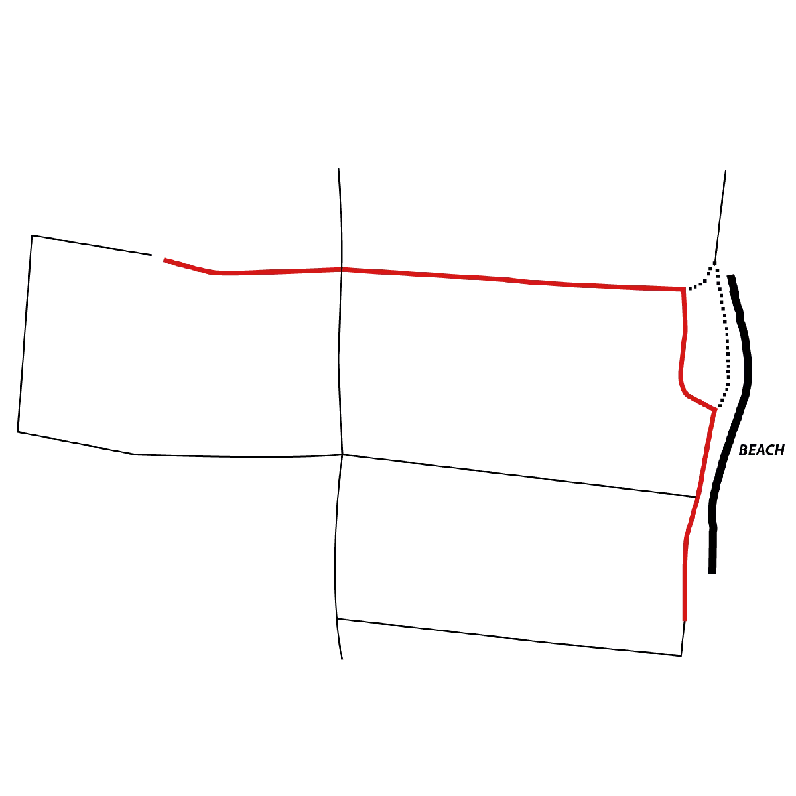
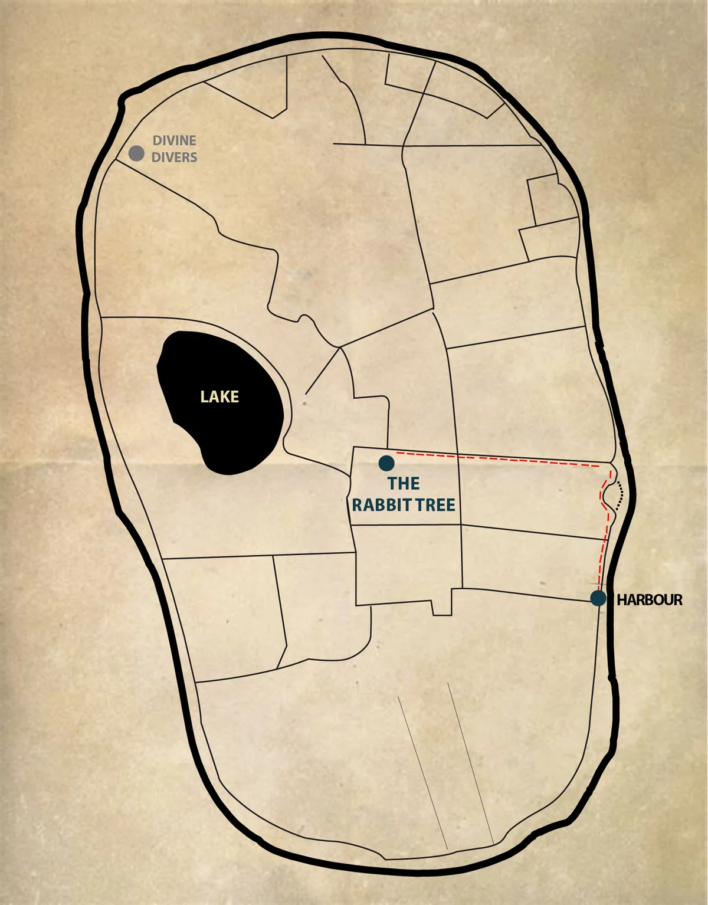

How To Get Here
And how to find us once you are on the island
The Rabbit Tree team works hard to get you the best prices and keep you away from scams.
Check our offers and contact us, we will make the booking for you.
Coming to Gili Meno
From Bali (South Bali, Amed, Sanur, Nusa Penida...)
- Every day: a minibus picks you up in the biggest cities of Bali to reach Padang Bai.
- Then a daily ferry to Gili Trawangan (or Gili Air), and a local boat on to Gili Meno.
- We have the cheapest prices possible, have a look and ask us.
From Gili Trawangan
- Daily public boat at 09:30 and 16:00 — 40,000 IDR.
- Every hour by fast boat — 85,000 IDR.
From Lombok (Bangsal)
- Public boat at 10:00, 14:00 and 17:00 — 25,000 IDR.
- Every hour by fast boat — 85,000 IDR.
How to find The Rabbit Tree
Once on Gili Meno
Once arrived at the Gili Meno harbour, turn right and follow the coast road until you reach 'Karma Reef' restaurant. Go left and then right leading towards the back of the restaurant, briefly follow this until you reach a tree with many signs on it. You should see a sign pointing left for The Rabbit Tree. Follow the road on the left for about 5 minutes and you will find our hostel on the left side of the road just past Amigos Bungalows.
If you need any help, give us a call or ask any local!
The island, drawn by hand




The short version
Gili Meno harbour
Arrive by boat, then turn right along the coast road.
Karma Reef
Follow the coast until Karma Reef restaurant, then left and right behind it.
The signposted tree
Reach the tree covered in signs; take the left for The Rabbit Tree, 5 minutes on foot.